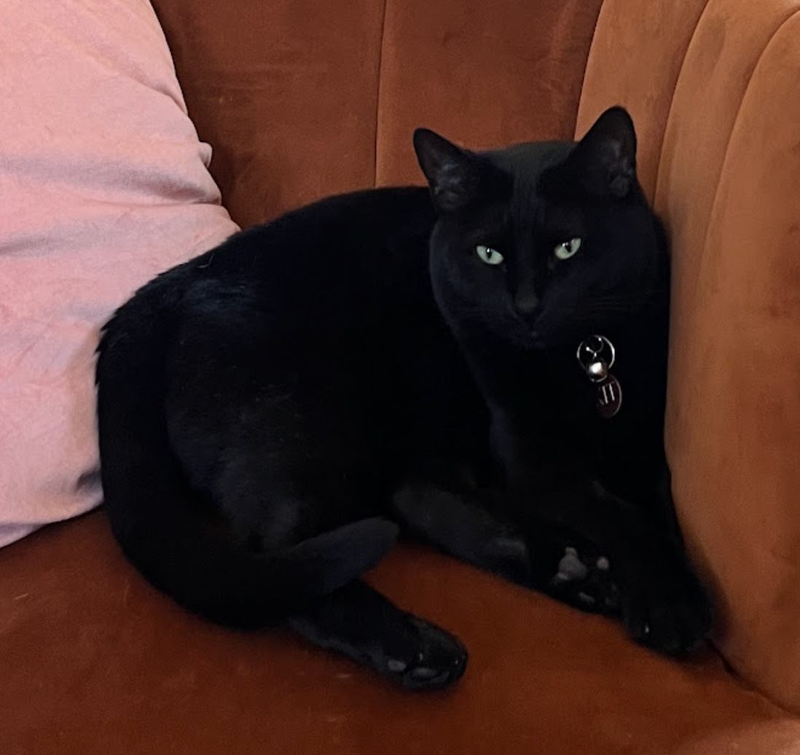
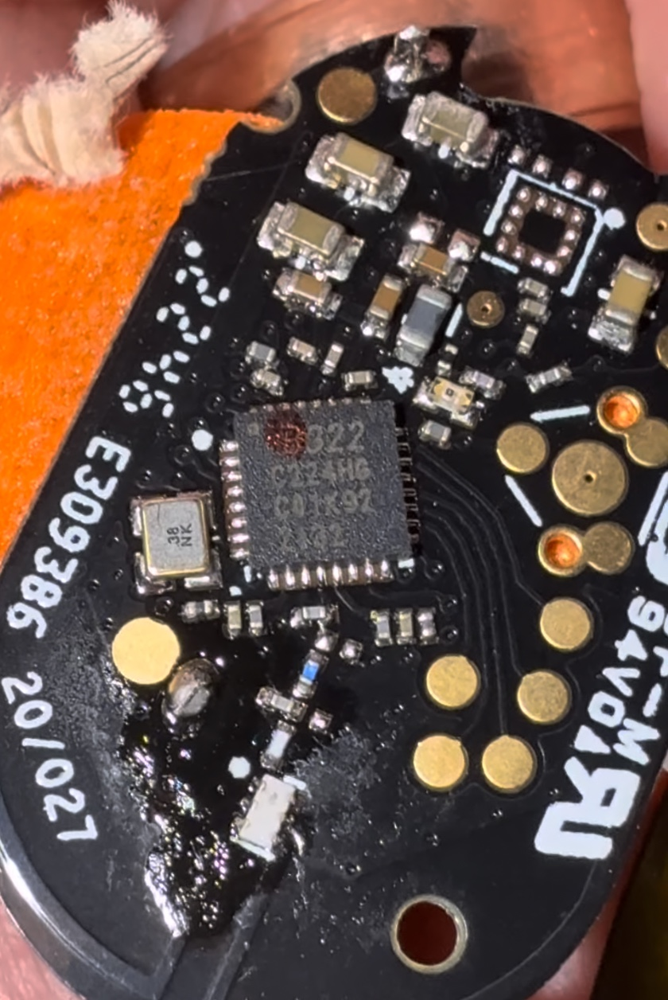
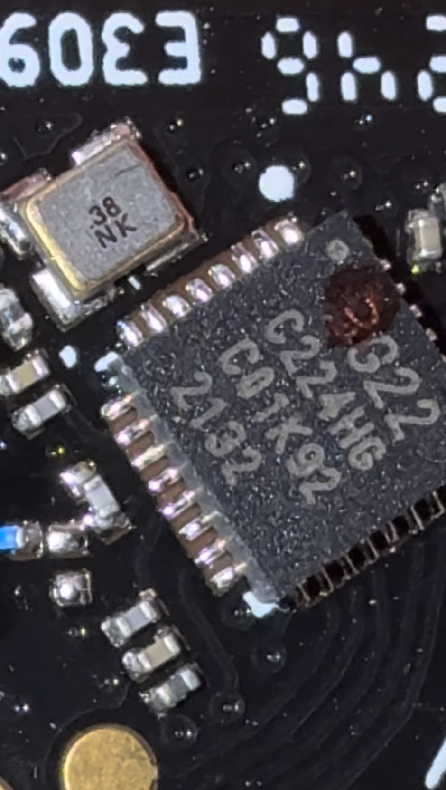
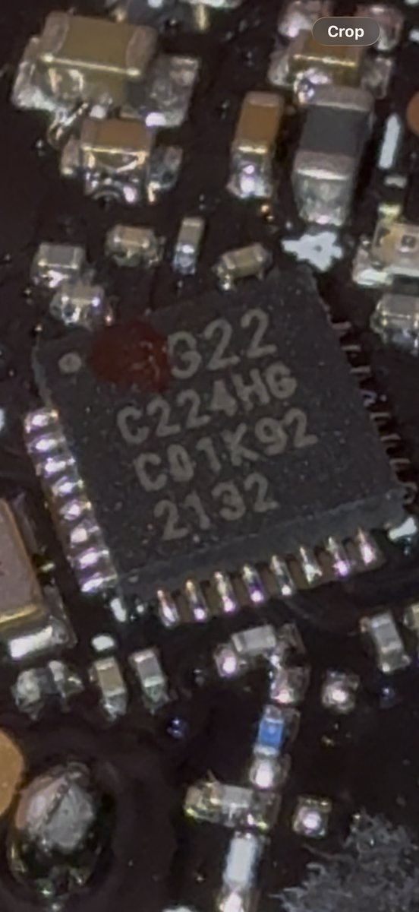
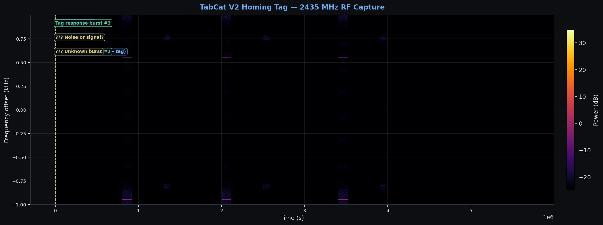
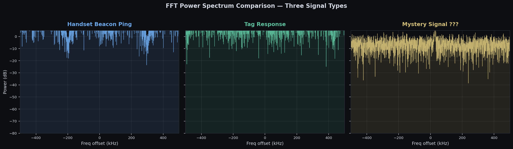
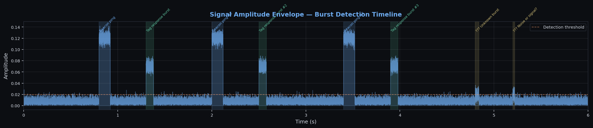
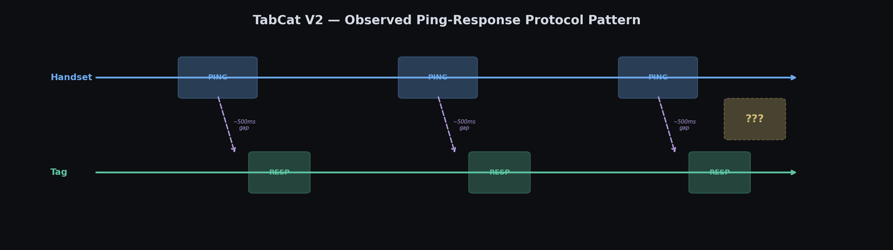
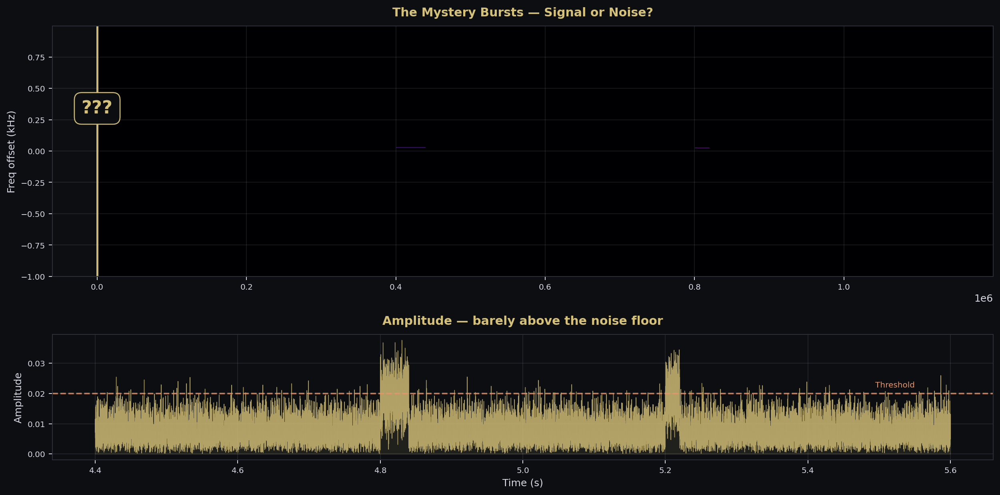

Reverse Engineering the TabCat V2 Cat Tracker RF Protocol

Why
My cat Kit goes outside. After a few too many evenings of not knowing where she was, I got a TabCat V2 — a little RF tag on her collar and a handheld unit that beeps louder as you get closer. It actually works.
Of course I had to open it. What frequency? What protocol? What chip? Could I build my own receiver? Here's how far I got.
FCC Filings
Every wireless device in the US needs an FCC ID. The TabCat has two:
| Component | FCC ID | Frequency | Granted |
|---|---|---|---|
| Handset | TUW-PH | 2435.0 MHz | 2022-07-20 |
| Tag | TUW-BT | 2435.0 MHz | 2022-07-21 |
2435 MHz, proprietary spread spectrum
2435 MHz — smack in the 2.4 GHz ISM band, but not Bluetooth, not Zigbee, not WiFi. The FCC classifies it as "low power transmitters using spread spectrum techniques" (Part 15C, scope A4). That's a useful clue — it means the modulation is probably OQPSK DSSS or frequency-hopping, not simple narrowband FSK. Made by Loc8tor Ltd in London, tested by UL International UK.
The interesting documents (block diagram, schematics, BOM, operational description) are all marked confidential. So the FCC gives us frequency and the modulation family, but nothing about the actual protocol. Time to open it up.
PCB Teardown
The PCB is tiny — thumbnail-sized. One main IC, a crystal, some antenna pads, and battery contacts.



The Chip
The IC markings:
C224HG
C01K92
2132
I think this is a Silicon Labs EFR32FG22C224 — the proprietary-wireless variant of their Wireless Gecko Series 2 line. The reasoning:
- G22 — the xG22 family (EFR32xG22)
- C224 — ordering code for the 2.4 GHz radio config
- 2132 — date code, week 32 of 2021
- C01K92 — lot/trace code
Does the chip match the signal? Yes.
I checked the EFR32FG22 specs. It supports exactly what we'd expect given the FCC filing and the signals we captured:
- GFSK up to 2 Mbps — matches the wider-bandwidth beacon pings
- OQPSK DSSS at 250 kbps, -102.3 dBm sensitivity — this is the "spread spectrum" from the FCC classification, and DSSS would enable the direction-finding (precise time-of-arrival)
- RFSense with selective OOK — ultra-low-power wake-up mode. The mystery bursts at the end of my capture might be this
The FG22 is specifically a proprietary-only part — no BLE or Zigbee stack, just custom firmware on Silicon Labs' RAIL API. Cortex-M33, 512 KB flash, QFN32 (4x4 mm), +6 dBm TX, 1.8-3.8V.
One thing I want to flag: I can't find "C224HG" in any Silicon Labs documentation. The "HG" is probably an abbreviated flash/RAM/package designator that they print on the chip but don't put in public ordering guides. Searching the full marking string online gives nothing. If you know how to read SiLabs package markings, please get in touch.
RF Capture
Now that I know the frequency (2435 MHz), I set up an SDR capture. A normal RTL-SDR maxes out around 1.7 GHz, so you need a HackRF, a downconverter, or something else that covers 2.4 GHz. I used a wideband SDR at 2 MHz sample rate centered on 2435 MHz.
# Parameters from FCC filing TUW-BT
CENTER_FREQ = 2_435_000_000 # 2435 MHz
SAMPLE_RATE = 2_000_000 # 2 MHz BW
GAIN = 40
sdr.sample_rate = SAMPLE_RATE
sdr.center_freq = CENTER_FREQ
sdr.gain = GAIN
samples = sdr.read_samples(1024)
amplitude = np.abs(samples)
if np.max(amplitude) > THRESHOLD:
log_burst(timestamp, amplitude)Spectrogram
You can see the protocol immediately. The handset sends a beacon ping, the tag responds with a shorter, weaker burst, then there's a gap of about 500-700ms before the next pair. Clean and regular — until the end.

FFT Comparison
Looking at the frequency content of each signal type, you can see three distinct signatures. The handset ping is wider and louder, the tag response is narrower and quieter, and the mystery signals are barely distinguishable from the noise floor:

Amplitude Over Time

Protocol Pattern

Spectrum Animation
Full capture played back at 60fps. Left is the spectrogram waterfall, right is the FFT at each moment. You can see the signal bursts light up both views simultaneously:
Spectrogram waterfall + live FFT, 60fps.
Interactive Spectrum Viewer
Scrub through the RF capture. The FFT shows frequency content at each moment.
Where I Got Stuck

These two blips at the end
Around t=4.8s and t=5.2s, two faint bursts show up. They're right at the noise floor and look different from everything else:
- Way shorter (20-40ms vs 80-120ms for real signals)
- Barely above the detection threshold
- Different frequency offset
- No handset ping before them
One thought: the EFR32FG22 has an RFSense OOK wake-up mode. The tag might send low-power heartbeat beacons so the handset knows it's nearby before starting the full ping-response sequence. Short and quiet would fit.
Or it's just 2.4 GHz interference. WiFi, Bluetooth, somebody's microwave. I tried correlating with button presses and distance changes and couldn't find a pattern.
Dead Ends
Nobody else seems to have looked at the TabCat protocol. No open-source firmware, no write-ups, nothing. Loc8tor runs a custom stack on RAIL, which makes sense for direction-finding — you'd need custom signal processing (RSSI gradients, maybe phase-difference) that doesn't fit in a BLE or Zigbee framework.
The chip marking C224HG is also a dead end. I'm fairly sure about the chip family but can't pin down the exact variant.
Takeaways
- FCC filings tell you a lot. Even with confidential docs, you get frequency and modulation family. "Spread spectrum" pointed me at DSSS before I captured anything.
- Chip + filing + capture all agree. The FG22 does GFSK and OQPSK DSSS at 2.4 GHz. That matches the FCC classification and the spectral shapes. When all three line up, you can be confident.
- 2.4 GHz proprietary is hard. 433 MHz OOK —
rtl_433handles that on the first try. Custom GFSK at 2.4 GHz with unknown framing is a different problem. - 2.4 GHz is loud. Separating a weak proprietary signal from WiFi/BLE/everything else is hard without a directional antenna or shielded setup.
What's Next
- Directional antenna aimed at the tag
- GNU Radio GFSK demodulator at 2435 MHz
- Look for DSSS spreading codes in raw IQ
- Captures at different distances
- Dig into RAIL SDK docs
If you know something I don't
I'd like to hear from anyone who's worked with EFR32 chip IDs, proprietary 2.4 GHz stuff, or TabCat/Loc8tor products:
- Does
C224HGmap to a known FG22 variant? - Could the mystery bursts be RFSense wake-up packets?
- Best tool for demodulating unknown GFSK at 2.4 GHz?
Links
| TabCat V2 | us.tabcat.com |
| FCC (tag) | TUW-BT |
| FCC (handset) | TUW-PH |
| EFR32FG22 | silabs.com |
| Datasheet | |
| Code | GitHub |